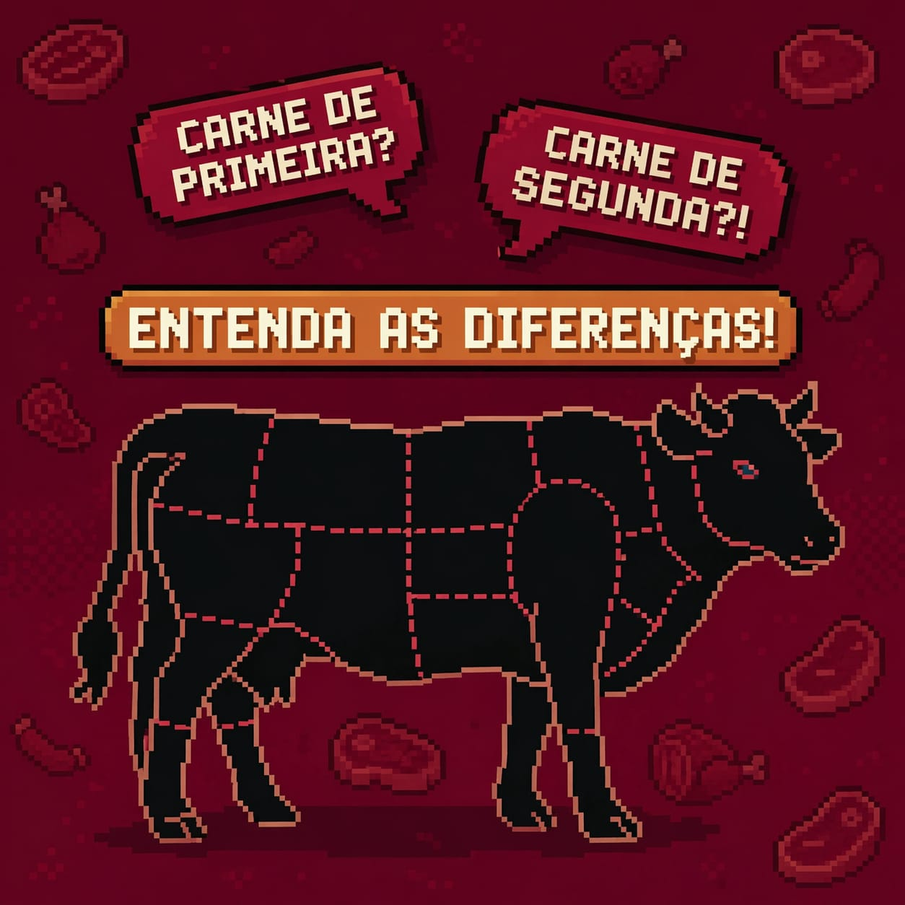
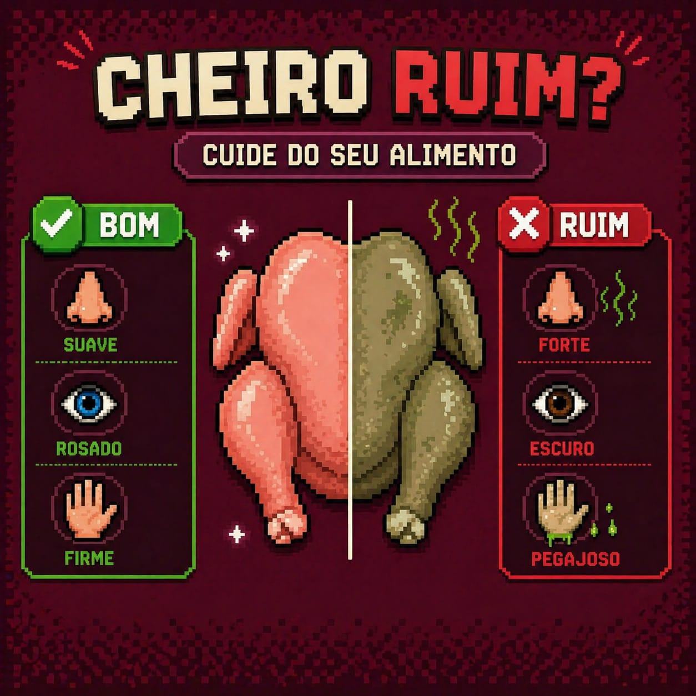
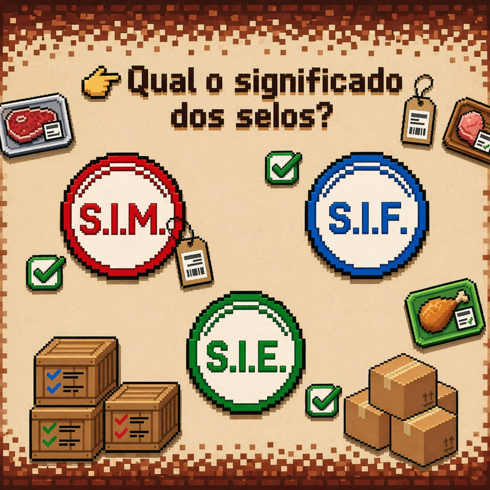

Conhece todos as 3 qualidades de carne? Descubra como diferenciar e o que cada uma significa.
Descubra tipos diferentes de cortes e para que os usar.

Descubra como identificar e diferenciar os cheiros e aromas de diferentes tipos de carne.

O que cada selo significa e como ele pode te ajudar a escolher a carne certa para o seu prato favorito.